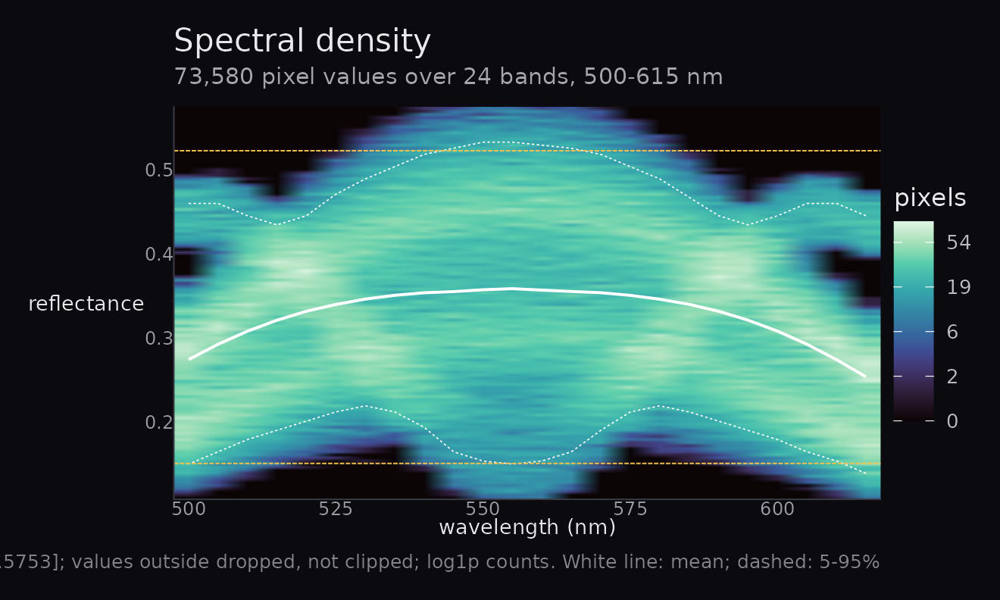
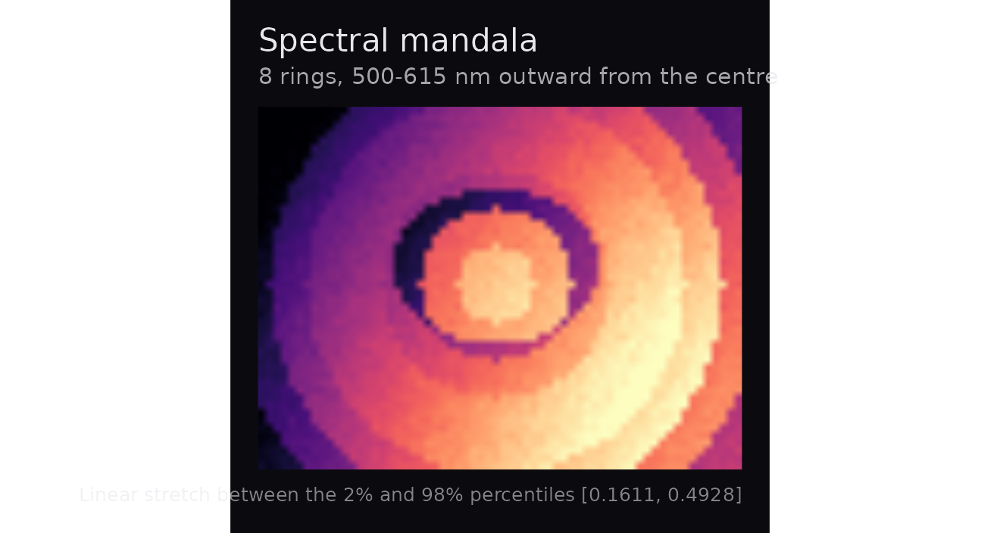
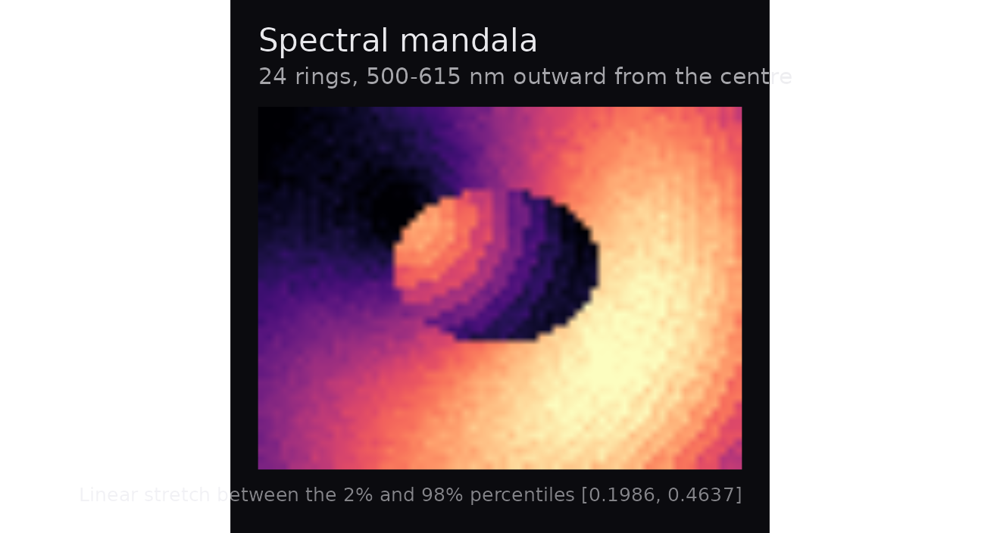
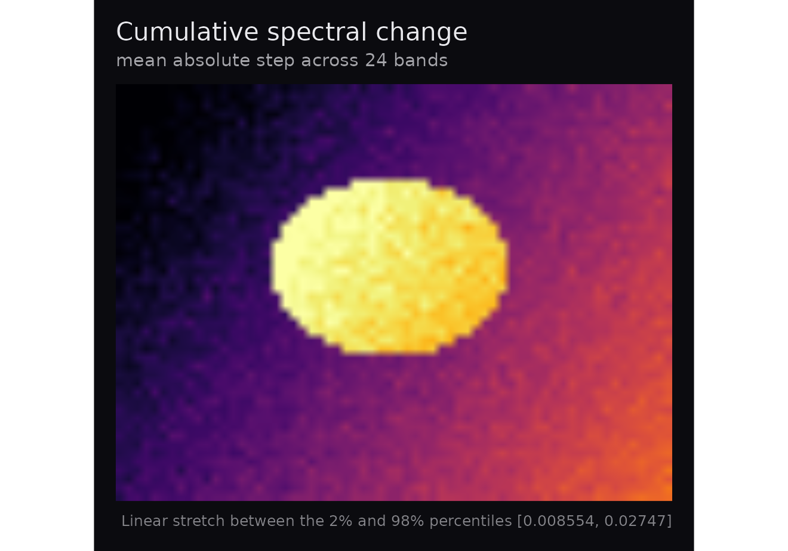
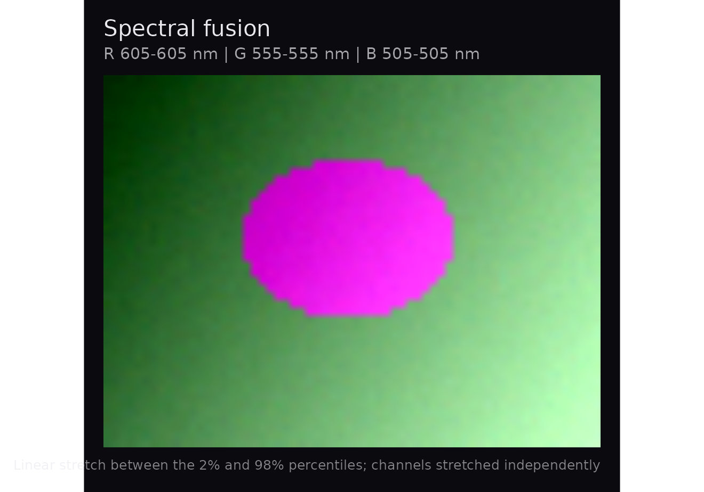
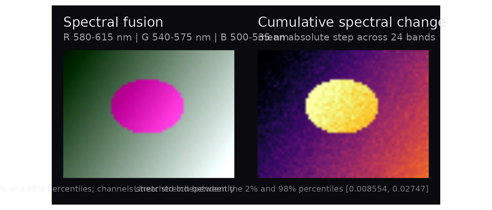

Making hyperspectral figures worth looking at
Source:vignettes/hyperspectaculR.Rmd
hyperspectaculR.RmdA hyperspectral cube holds a full spectrum at every pixel, and almost
every figure made from one throws that away — a single band, or three
bands pushed into red, green and blue. hyperspectaculR is
for the other kind of figure: compositions that could not be produced
from any single wavelength, made to be looked at rather than measured
off.
It reads nothing and analyses nothing. Reading belongs to tivis.r and cuvis.r; the
cube class and the analysis pipeline belong to hyperspectR.
This package takes an hsi_cube and returns a
ggplot.
Everything below runs on a small synthetic cube bundled with the package, so the vignette builds without any recorded data.
cube <- hsa_demo_cube()
dim(cube$data)
#> [1] 48 64 24
range(cube$wavelengths)
#> [1] 500 615Start with the distribution
Before any of the images, it is worth looking at what is actually in
the cube. hsa_spectral_density() bins every pixel’s
reflectance against wavelength and draws the joint distribution, with
the mean spectrum and a 5–95% envelope threaded through it.
hsa_spectral_density(cube)
This is the only composition here that is not an image, and it is the
one the others should be read against. Every image below applies a
contrast stretch; this shows the distribution that stretch is applied
to. Passing show_limits = TRUE draws those limits straight
onto it, so you can see whether they sit sensibly inside the data or are
cutting into it.
hsa_spectral_density(cube, show_limits = TRUE)
Two details matter for trusting the figure. Values outside the range
are dropped, not clipped — clipping would pile their
mass into the end bins and manufacture bright edges at the extremes,
which is exactly the artefact this plot exists to expose. And counts are
shown on a log1p scale by default, because reflectance
histograms are heavy-tailed and a linear scale shows only the mode; the
colourbar labels are back-transformed, so the legend still reads true
counts.
On real recordings this is often where problems surface first. A capture whose mass piles onto a few discrete reflectance values is quantised — too few photons divided by a white reference — and no amount of careful rendering downstream will put information back.
Four compositions
A radial spectral sweep
hsa_mandala() draws concentric annuli, each taken from a
different wavelength: the innermost ring is the shortest wavelength, the
outermost the longest. One image, sweeping the whole spectral axis
outward from a centre.
hsa_mandala(cube)
Fewer rings give bolder banding; more rings sample the spectrum finely enough that the transition reads as continuous.
hsa_mandala(cube, n_rings = 8)
The centre is yours to choose, which matters when the subject is not in the middle of the frame.
hsa_mandala(cube, centre = c(20, 15), n_rings = 24)
How much a pixel moves across the spectrum
hsa_spectral_flux() sums the absolute change between
consecutive bands. Flat spectra go dark; pixels whose reflectance swings
across the spectrum light up.
hsa_spectral_flux(cube)
This is not a variance map. Variance is blind to the order of the bands, whereas this responds to spectral shape — two pixels with identical variance score differently if one changes smoothly and the other oscillates.
Colour from band groups
hsa_fusion() builds a composite by averaging three
groups of bands rather than picking three wavelengths. Averaging
suppresses per-band sensor noise, so the result is smoother and more
saturated than a three-band composite, while remaining a simple and
disclosable operation.
hsa_fusion(cube)
Groups can be given as wavelengths when that is how you think about the subject:
wl <- cube$wavelengths
hsa_fusion(cube, red = wl[22], green = wl[12], blue = wl[2], by = "wavelength")
Saying what you did to the image
The density plot above shows the distribution; the images apply a stretch to it. That stretch is what makes hyperspectral data legible on a screen, and also the easiest way to make a figure imply something the data does not. So every function here captions the stretch it applied and the limits it used:
hsa_mandala(cube)$labels$caption
#> [1] "Linear stretch between the 2% and 98% percentiles [0.1694, 0.4918]"
hsa_spectral_flux(cube, stretch = "range")$labels$caption
#> [1] "Linear stretch over [0.006715, 0.02887]"
hsa_mandala(cube, stretch = "none")$labels$caption
#> [1] "No contrast stretch applied"
hsa_spectral_density(cube)$labels$caption
#> [1] "128 bins over [0.1075, 0.5753]; values outside dropped, not clipped; log1p counts. White line: mean; dashed: 5-95%"That caption travels with the figure. If a reviewer asks what was done to the image, the answer is printed underneath it.
Colour that survives the journey
hsa_palette() offers only ramps that are monotonic in
lightness, so ordering is preserved in greyscale printing and remains
legible to colourblind readers.
head(hsa_palette("magma", n = 6))
#> [1] "#000004FF" "#3B0F70FF" "#8C2981FF" "#DE4968FF" "#FE9F6DFF" "#FCFDBFFF"Rainbow-like ramps are excluded on purpose, with one exception kept for screen-only use — and it tells you:
invisible(hsa_palette("turbo", n = 4))
#> Warning: "turbo" is not monotonic in lightness.
#> ℹ It reads well on screen but loses ordering in greyscale; prefer "viridis" or
#> "magma" for print.Composing figures
Everything is a ggplot, so panels combine with
patchwork, re-theme, and export through
ggsave() at whatever size and resolution a journal wants.
Nothing writes a file as a side effect.
library(patchwork)
hsa_fusion(cube) + hsa_spectral_flux(cube)
For print, export as vector where the composition allows it, or at 300–600 dpi where it does not — these are raster images, so a high-resolution PNG or TIFF is usually the honest choice:
ggplot2::ggsave("figure-1.png", hsa_mandala(cube),
width = 180, height = 130, units = "mm", dpi = 600)Working from real recordings
With hyperspectR installed, the same functions take real
cubes from either supported instrument:
library(hyperspectR)
# TIVITA, via tivis.r -- no vendor SDK needed
cube <- hs_read_tivita("2019_11_25_13_29_24_SpecCube.dat")
# Cubert, via cuvis.r and the CUVIS SDK
# cube <- hs_read_cubert("session.cu3s")
hsa_fusion(cube, red = 850, green = 650, blue = 550, by = "wavelength")Both readers return the same hsi_cube, so nothing here
changes between instruments — only the wavelengths in the caption.
A reasonable habit with an unfamiliar recording is to run
hsa_spectral_density(cube, show_limits = TRUE) first. If
the distribution is banded, truncated, or piled against one end, that is
worth knowing before choosing how to render it — and worth saying in the
figure caption either way.